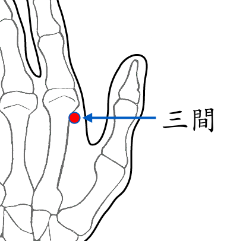

【穴位名稱】: 三間 (LI3)

【治療症狀】: 失眠 神經衰弱 三叉神經痛 臂叢神經痛 顏面神經痙攣 肩痛不舉 手痛 手指痛 手脹_手麻 腳痛 皮膚癢 牙痛 眼花_散光 近視
【取穴位置】: 微握拳，食指本節 (第2掌指關節)後方橈側凹陷處。《靈樞·本輸》：「注入本節之後三間」；《針灸甲乙經》：「在手大指次指本節後內側陷者中」；《循經考穴編》：「約去二分許陷中」。
【針刺方法】: 半握拳，向掌骨掌側直刺或向合谷方向斜刺0.5～1吋。
回前頁